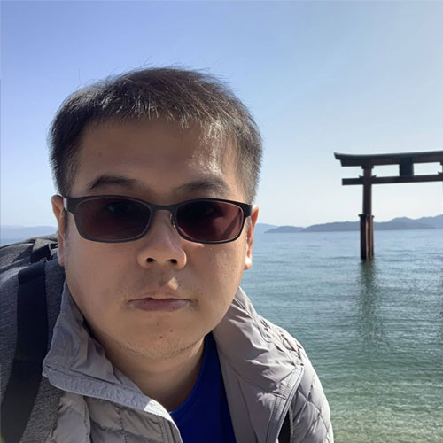

翰霖科技資訊股份有限公司
網頁設計師｜元大銀行駐點協助銀行官網專案開發、既有功能維護與行銷活動網頁製作，目前仍在職。
- 官網功能開發、既有頁面維護與響應式活動頁製作。
- 需求確認、跨部門溝通、多裝置測試及上線驗證。
UI Designer × Front-end Developer

目前從事銀行業官網專案開發與行銷活動網頁製作。近期參與 iPlayground 議程活動並擔任設計職務，負責活動網站、印刷物、周邊商品及宣傳品的設計製作，持續累積數位介面、前端實作與跨媒介視覺整合經驗。
2024.07
至今
協助銀行官網專案開發、既有功能維護與行銷活動網頁製作，目前仍在職。
2022.09
2024.02
負責平台行銷活動的視覺策略、UI 介面與 H5 活動頁，支援運營端視覺需求。
2021.02
2022.08
負責 UI/UX、RWD 前端與 LINE 智慧服務，並協助測試、需求溝通及資料自動化。
2018.11
2020.11
負責 RWD 網站開發、互動模組、跨瀏覽器相容性與既有專案維護。
2016.09
2018.10
負責專案時程、團隊協調與測試驗收，協助智慧社區服務導入，產品導入率曾達 70%。
2015.04
2016.08
負責點歌機、KTV 平台與行動應用的 UI、視覺素材及功能企劃。
2014.02
2014.12
從官網設計與前端製作轉任專案管理，擔任業務與開發端的溝通窗口。
2011.01
2013.08
負責能源管理平台介面、HTML/CSS 前端實作與軟硬體效能及 QA 測試。